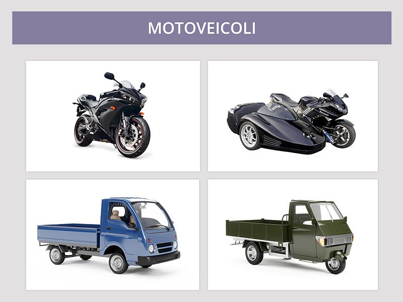

Motoveicoli

Motocicli
Sono veicoli:- a due ruote
- con cilindrata superiore a 50 cm3
- possono essere dotati di cambio automatico
Sono soggetti a revisione dopo quattro anni dalla prima immatricolazione, successivamente ogni due anni.
Tricicli a motore
Sono veicoli:- a tre ruote simmetriche
- con motore di cilindrata superiore a 50 cm3
- aventi una velocità massima superiore a 45 km/h
Sono soggetti a revisione dopo quattro anni dalla prima immatricolazione, successivamente ogni due anni.
Non è vero che possono essere condotti senza patente.
Attenzione il complesso costituito da un motociclo e un sidecar (motocarrozzetta con ruote non simmetriche) non è rientra nella categoria dei tricicli.
Quadricicli a motore
Sono veicoli:- a quattro ruote
- di massa a vuoto sino a 400 Kg (550 Kg se destinati a trasporto di cose)
- di potenza del motore massima fino a 15 kW
Per guidare un quadriciclo, di norma, occorre aver compiuto 16 anni ed essere in possesso della patente di categoria B1 a meno che si tratti di un quadriciclo leggero.
Nei quadricicli con carrozzeria aperta (quad) occorre indossare il casco.
Tutti i quadricicli (leggeri o meno) sono soggetti a revisione periodica.
E' espressamente vietato modificare o sostituire il motore dei quadricicli per aumentarne la velocità o la cilindrata.